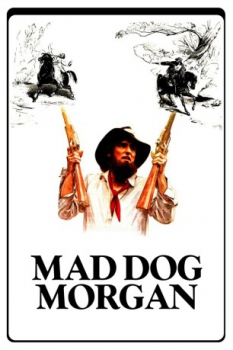
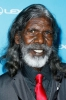

Country:United States, 102 minutes
Spoken languages:
Genres:Action, Crime, Drama, Western
Director(s):Philippe Mora
Writer(s):Philippe Mora
Video Codec:Unknown
Number: 1688


Certification:R
Storyline:
The true story of Irish outlaw Daniel Morgan, who is wanted, dead or alive, in Australia during the 1850s.
Cast: 

Medium: Original DVD,
Loaned: No
Aspect ratio: Unknown